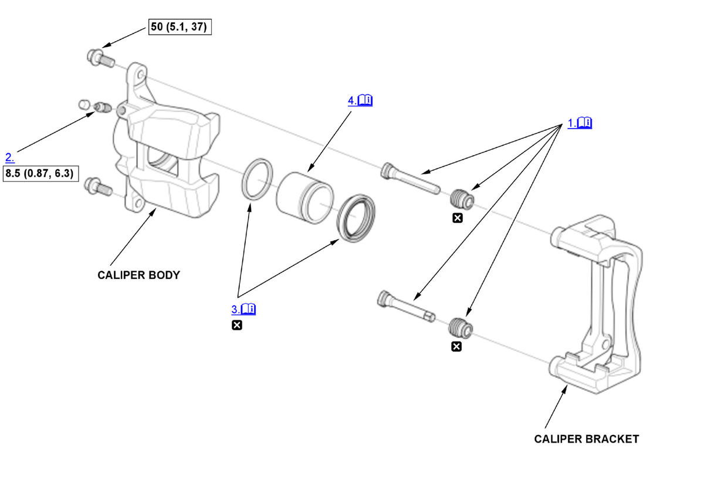

Front Brake Caliper Overhaul (Si) (2017 2018 2019 2020 2021): Reassembly: Procedure
NOTE:
Numbered call-outs in figure pertain to list numbers in following procedure.
Fig 1: Exploded View Of Front Brake Caliper Components With Torque Specifications For Reassembly (Si - 2017-21)

Courtesy of HONDA, U.S.A., INC. |
Detailed information, notes, and precautions |
 |
Torque: N.m (kgf.m, lbf.ft) |
 |
Replace |
- Caliper Pin and Pin Boot - Install
1. Apply a thin coat of Honda silicone grease (P/N 08C30-B0234M) or caliper set grease (NIGLUBE RM) to the caliper pins (A) and the pin boots (B). NOTE: Use the grease that is included in the caliper set.
2. Install the pin boots.
3. Install the caliper pins.
- Make sure that the caliper pins are installed correctly. The upper caliper pin and the lower caliper pin are different. If these caliper pins are installed in the wrong location, it will cause vibration, uneven or rapid brake pad wear, and possibly uneven tire wear.
- Make sure that the pin boots are properly positioned into the grooves (C) of the caliper pin and the grooves (D) of the caliper bracket.
- Remove air from within the pin boots.
- Bleed Screw - Install
- Piston Boot and Piston Seal - Install
1. Apply a thin coat of Honda silicone grease (P/N 08C30-B0234M) or service set grease (silicone grease) to the piston seal (A). NOTE: Use the grease that is included in the caliper set.
2. Install the piston seal.
3. Apply a thin coat of Honda silicone grease (P/N 08C30-B0234M) or service set grease (rubber grease) to the piston boot (B).
NOTE: Use the grease that is included in the caliper set.
4. Install the piston boot.
- Piston - Install
1. Apply brake fluid to the outer surface of the piston (A), then set the piston in place on the caliper body (B). 2. Install the brake caliper piston compressor (A) on the caliper body (B). 3. Press in the piston with the brake caliper piston compressor.
NOTE:
- Make sure that the piston boot is properly positioned into the groove of the piston.
- Do not press the piston diagonally, and do not force it.
- Be careful not to damage the piston boot when pressing in the piston.